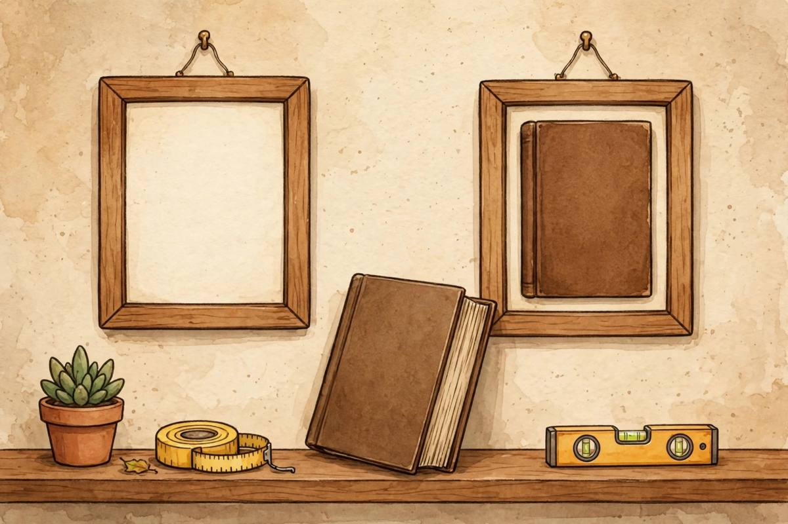

Framing Old Textbook Covers and Title Pages as Wall Art: Sizes, Mats, and Safe Hanging

1 cover, 1 title page, and 0 reasons to guess the frame size. That is the honest starting count for this project, checked on 2026-11-19 against the framing and frame size sources used here. Framing looks like the gentlest job on this site, and it is, right up until the irreversible part. Removing a page significantly alters the original object, and a cover only comes off a book once. So the money question and the book question are the same question, asked before anything is cut: what does this piece cost the book, and is the wall version worth that price?
Job summary
Difficulty: easy for a flat page in a ready made frame, moderate once a custom mat enters the picture. Time: one sitting for measuring, mounting, and assembly, plus the trip for the frame and mat. Hire a pro lines: a book that may be rare, signed, or still usable goes to a professional framer or stays whole, never to the craft knife. Glazing is bought ready cut or cut by a glass shop. This guide gives no glass cutting procedure, on purpose.
Which covers and pages qualify: the decision
Run every candidate through these three gates, in order.
Gate 1: Is the book already finished as a book? Framing guidance treats a single page as a flat item project suited to prints, signed title pages, or pages removed from a book that is beyond repair. A detached cover from a binding that has already failed passes this gate. A title page from that same ruined binding passes it too.
Gate 2: Does the object matter more than the page? Where the book itself holds more value than a single page, the documented answer is a whole book treatment in a deep enclosure, not a removal. A signed, rare, or collectable textbook fails the cutting gate here. Frame it whole in a shadow box, display it closed on a shelf, or leave it alone.
Gate 3: Will the piece read at wall distance? A strong cover design, a title page with a bold title block, and an illustrated plate all carry a wall. A dense page of body text usually does not, and no frame fixes that. If the piece needs explaining from two feet away, it belongs in the book, not on the wall.
A candidate that passes all three gates is a framing project. A candidate that fails gate 1 or gate 2 is a stop, not a slower yes.
From textbook size to frame size: the table
Measure the actual piece, cover or page, before buying anything. One framing source notes that trade paperbacks and similar books generally measure 5.5 inches by 8.5 inches or 6 inches by 9 inches, and those sizes sit between the standard mat openings below, which is why so many book pages end up in the wrong frame. A frame size names the size of what goes inside it, not the outside of the moulding. The mat window is cut slightly smaller than the piece so the mat holds its edges, typically 1/8 inch per side, so the opening ends up 1/4 inch smaller each way.
| Piece size | Frame to buy, with a mat | Mat opening |
|---|---|---|
| 5 by 7 in | 8 by 10 in | 4.75 by 6.75 in |
| 8 by 10 in | 11 by 14 in | 7.75 by 9.75 in |
| 8.5 by 11 in | 12 by 16 in | 8.25 by 10.75 in |
| 11 by 14 in | 16 by 20 in | 10.75 by 13.75 in |
Read the table as a pairing rule, not a promise. If the measured textbook piece lands between rows, the honest options are a custom cut mat in the larger frame, or a frame with no mat at all. Squeezing a 6 by 9 inch page behind an opening cut for a smaller piece hides the title the project exists to show.
Tools and materials
- The qualifying cover or page, measured on all four sides
- Frame in the size picked from the table, checked for cracks and splintered edges if it is a reused frame
- Acid free, lignin free matboard and backing board
- UV filtering glazing, glass or acrylic, bought ready cut
- Japanese paper hinges and water activated starch paste, or polyester film mounting corners
- Tape measure, pencil, and a level
- Bathroom scale, for weighing the finished frame
- Picture hooks, D rings, or other hanging hardware rated above the weighed frame
- Gloves, for handling glazing edges
On materials, the preservation rules are specific. Matboard and backing board must be acid free and lignin free, often alpha cellulose or, at the highest standard, 100 percent cotton rag, often buffered with calcium carbonate. Standard glass blocks only about 49 percent of UV radiation, while conservation grade acrylic or glass blocks between 97 and 99 percent. Acrylic is also lighter and shatter resistant, which matters more as the frame gets bigger.
Mount it so it can come back out
Mounting must be reversible. Permanent glues and tapes should never contact the book material directly. The preferred flat method uses Japanese paper hinges with a reversible, water activated starch paste, so the page hangs from its top edge and can expand and contract with temperature and humidity instead of buckling. Polyester film corners or strips are the other accepted route, holding the piece at its edges with no adhesive on the piece at all. A mat does double duty here: its window overlaps the piece by about 1/8 inch on all sides to hold it securely, and the mat itself keeps the paper separated from the glazing.
The frame build, step by step
Warning, before Step 1: a craft knife is the cutting tool in this build, and it belongs in Step 1 only. Keep fingers behind the blade line, cut on a protected surface, and stop if the binding resists. A binding that fights back is a book that has not passed the decision gates above.
Step 1: Free the piece, if it is not already free. For a crisp removal, press the book open flat, hold the pages down, and run a hobby knife along the very inside edge of the page. A detached cover needs no cutting at all, which is one more reason it is the best first project. Check: the piece lies flat, with a clean edge and no torn title block.
Step 2: Confirm the fit dry. Lay the piece behind the mat window and check the overlap on all four sides before any hinge is pasted. Check: the mat holds every edge, and nothing worth reading is hidden.
Step 3: Hinge or corner the piece to the backing board. Use the reversible mounting above, hinges at the top edge or film corners at the edges. Check: the piece stays put when the board is tilted, and no adhesive touches the piece itself.
Warning, before Step 4: glazing edges are sharp, ready cut or not. Handle the pane with gloves, carry it vertically, and keep it flat on a clear surface when it is not in the frame. A pane with a chipped corner goes back to the shop, not into the frame.
Step 4: Stack the frame in order. The assembly order is glazing, then mat, then the framed piece on its backing board, then a rigid dust cover. Confirm the frame is deep enough for the whole stack before securing it. Check: from the front, the piece sits centred behind the window, touching neither glazing nor frame edge.
Step 5: Seal the back. Fit the dust cover so dust, dirt, and insects stay out of the enclosure. Check: the back is closed all the way around, with no gap at the corners.
Step 6: Fit the frame hardware. Attach D rings sized for the frame weight, one on each side. Conservation guidance notes that each D ring size is designed to bear a certain maximum weight, and exceeding that weight may break the ring. Check: both rings are fixed into solid frame material, not into thin or cracked moulding.
Hang it on rated hardware, not on feel
The casual rule in most framing write ups is feel: a frame that feels heavy gets a stud, a light one gets a nail or a strip. Feel is not a rating. Weigh the finished frame instead, by standing on a bathroom scale holding it and subtracting your own weight. Then pick hardware by this rule: the combined rated capacity should be at least twice the framed weight.
| Framed weight | Hardware | Combined rating needed |
|---|---|---|
| Under 10 lb | 1 or 2 picture hooks | 20 lb |
| 10 to 25 lb | 2 rated picture hooks or 2 threaded anchors | 20 to 50 lb |
| 25 to 50 lb | 2 toggle bolts, or 2 screws into studs | 50 to 100 lb |
| 50 to 100 lb | French cleat, or D rings to screws in studs | 100 to 200 lb |
Hang from two points where the frame allows it. Two points share the weight, keep the piece level, and leave a backup if one point fails, and D rings are preferred over a single wire, which can fray and break as it ages. Set the hooks well apart, roughly a third of the frame width in from each side, and level with each other. Two cautions close the job. The wall is the weak link, so a high rated hook in crumbly plaster is not a high rated hook. And adhesive strips are rated for light frames on smooth paint only, so they are the last resort for the smallest piece, never the plan for a glass fronted frame. Anything over 100 lb is a professional installer job, full stop. The frame hangs from its rated wall hardware alone. It never rests on, leans its weight onto, or is propped up by a stack of books.
What success looks like
A cover or title page held flat behind a mat that overlaps every edge by about 1/8 inch, mounted with no permanent adhesive on the piece, behind UV filtering glazing it does not touch. A sealed back. A frame whose weight was measured, not guessed, hanging level on two points with a combined rating at least twice that weight. And a book bill of exactly one piece, taken from a book that had already stopped being a book.
Mistakes that crack, fade, or drop the piece
Cutting a book that should have stayed whole. The fix is upstream: rerun the decision gates, and give the valuable book the shadow box route instead, on a cradle with straps or clear blocks holding it without damage, deep enough that its surface never touches the glazing.
Gluing the page down flat. Permanent adhesive on the piece is the unfixable mistake. The recovery is prevention: hinges or film corners, every time, so the next owner can reverse the mount.
Hanging a glass frame on one small nail. The frame feels light in the hand and heavy on the wall a month later. Weigh it, double the rating, use two points, and let the table above overrule the hand.
— Tom Reilly, Home & DIY Writer